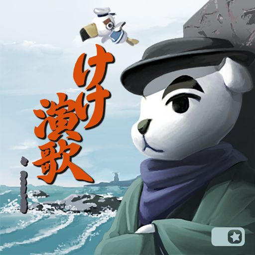

Qui suis-je ?
Expert de la relation clientèle depuis près de 20 ans, je veux poursuivre mes réussites dans ce domaine en manageant un service client. Former, accompagner, fédérer, piloter, sécuriser, définissent le leitmotiv de mon fonctionnement de responsable relations clients spécialiste en cybersécurité.
Télécharger mon CVInformations de contact
Nom :
John BRUNORI
Adresse :
8 Impasse Gaby lapon - 01700
Téléphone :
06.74.35.30.25
Mail :
Permis :
B
Expériences professionnelles
Coordinateur
ITM LAI
de 2012 à 2019
- des appels entrants, traitement des demandes, résolution et gestion administrative des litiges.
- Management d'une équipe de 4 personnes.
- Pilotage de l'activité.
- Participation à la mise en conformité au R.G.P.D.
- Coordination de la communication aux points de vente : obtention d’un taux de satisfaction du service de 96 % (en hausse de 10 % dès 4 mois d’action).
Auto-Entrepreneur import
John Brunori
de 2008 à 2011
Achats de biens importés, gestion des achats, des commandes, des stocks, etc.
Revente par internet et fidélisation.
Chargé de communication
ITM LA
de 2004 à 2007
- Communication interne et auprès de points de vente clients.
- Création du plan de communication et des procédures.